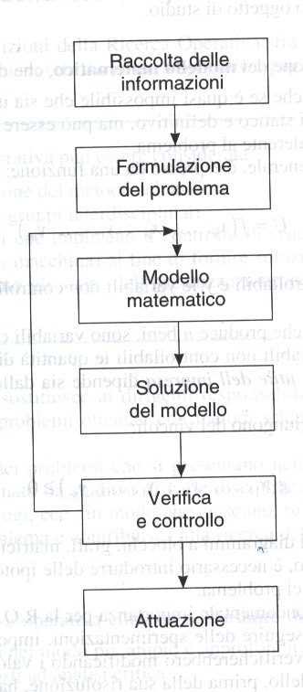
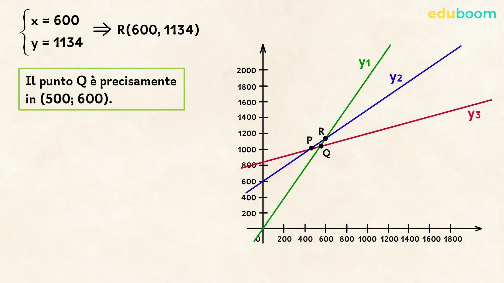
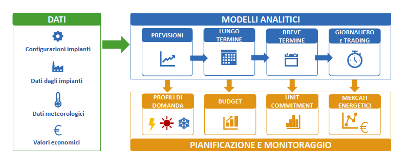

Introduzione alla Ricerca Operativa
La ricerca operativa è una branca della matematica applicata che si occupa di prendere decisioni ottimali in contesti complessi, come la gestione delle risorse, la logistica o la produzione industriale.
Problemi di Scelta e Ottimizzazione
I problemi di scelta si basano sull’individuare la migliore soluzione tra diverse alternative, rispettando vincoli specifici. Viene spesso usata la programmazione lineare per risolvere problemi di allocazione di risorse.
Applicazioni Pratiche
La ricerca operativa viene applicata in economia, ingegneria, trasporti, sanità e altri ambiti. Ad esempio, permette di ottimizzare i percorsi dei corrieri o la produzione in una fabbrica minimizzando i costi.
Conclusione
Conoscere i principi della ricerca operativa permette di affrontare problemi complessi con strumenti matematici efficaci e trovare soluzioni razionali e ottimizzate.